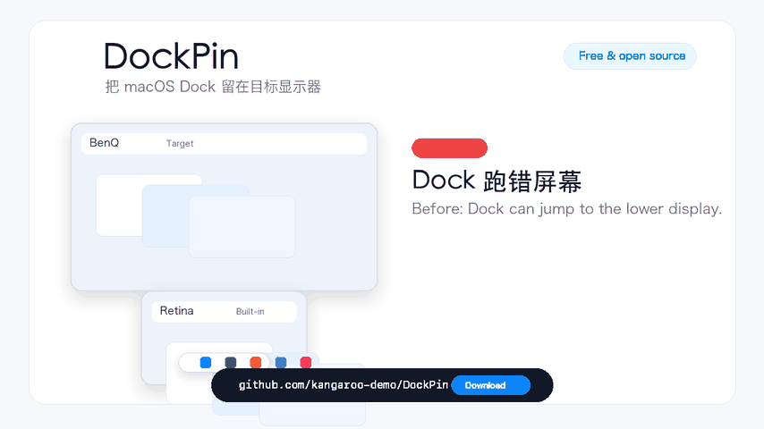

给多屏 Mac 的一点小修复
Dock 留在
你选的屏幕。
外接屏在上，笔记本在下，Dock 却总跑错屏？用一个轻巧、免费的菜单栏工具，选好它该待的地方。
macOS 13+ · 免费开源 · 无需账号
选好目标屏幕
选择显示器和底部、左侧或右侧边缘，帮助 Dock 留在目标位置，同时保留正常跨屏移动。
重新接屏，继续工作
记住你的显示器选择，外接屏重连或 Mac 唤醒后自动重新应用，无需来回切换目标。
安静地待在菜单栏
原生 Swift 小工具，在本机工作。App 无需账号、不收集分析数据，也不发起网络请求。
一个熟悉的困扰，
一个小小的修复。
为每天使用多块屏幕、总要把 Dock 挪回来的你准备。

三步，少一点折腾。
查看最新版本 ↗下载并打开
下载 DockPin.zip，解压后把 DockPin.app 移到“应用程序”。
允许辅助功能
在“系统设置 → 隐私与安全性 → 辅助功能”中启用 DockPin，然后重新打开 App。
选择目标屏幕
点击菜单栏图标，选好目标显示器和 Dock 边缘，然后继续工作。
macOS 提示无法验证 DockPin？
社区构建可能尚未公证。尝试打开后，前往“系统设置 → 隐私与安全性”，找到 DockPin 并选择“仍要打开”。你也可以从开源代码自行构建。
使用前，你可能想知道。
Mac 的 Dock 为什么会跑到另一块屏幕？
macOS 可能根据鼠标在显示器边缘的移动切换 Dock 所在屏幕。在外接屏位于 MacBook 上方的布局中，这尤其容易打断工作。DockPin 会帮助系统继续使用选定屏幕的 Dock 边缘。
所有显示器排列都能使用吗？
所选边缘有一部分外露时效果更好。如果整条边缘被另一块显示器覆盖，macOS 的公开能力可能无法稳定指定位置。共享边界保持可穿透；按住 Option 可以立即穿过正在观察的边缘。
为什么需要辅助功能权限？
DockPin 会观察鼠标移动，并在选定边缘附近短暂调整鼠标位置。App 在本机运行，不发起网络请求，不收集分析数据。查看隐私说明。
拔掉显示器或退出 App 后会怎样？
目标显示器断开时，会保留原选择并临时使用可用屏幕；重新接上或唤醒后重新应用设置。退出时会停止保护，并把 Dock 轻推回系统默认的外侧边缘。
如果帮你少折腾了一点。
欢迎在 GitHub 点个 Star，或分享给同样使用多屏的朋友。